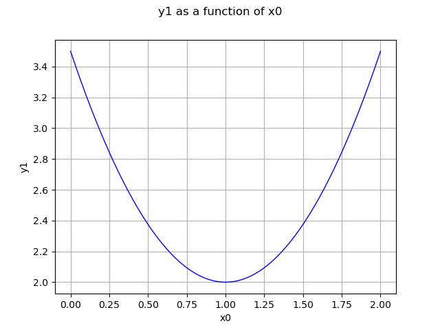

Note
Go to the end to download the full example code
Create a quadratic function¶
In this example we are going to create a quadratic function of the form
![f : \underline{X} \mapsto \underline{\underline{A}} ( \underline{X} - \underline{b} ) + \underline{c}
+ \frac{1}{2} \underline{X}^T \times \underline{\underline{\underline{M}}} \times \underline{X}]()
import openturns as ot
import openturns.viewer as viewer
from matplotlib import pylab as plt
ot.Log.Show(ot.Log.NONE)
create a quadratic function
inputDimension = 3
outputDimension = 2
center = [1.0] * inputDimension
constant = [-1.0, 2.0] # c
linear = ot.Matrix(inputDimension, outputDimension) # A
quadratic = ot.SymmetricTensor(inputDimension, outputDimension) # M
quadratic[0, 0, 1] = 3.0
function = ot.QuadraticFunction(center, constant, linear, quadratic)
x = [7.0, 8.0, 9.0]
print(function(x))
[-1,56]
draw y1 with x1=2.0, x2=1.0, x0 in [0, 2]
graph = (
ot.ParametricFunction(function, [1, 2], [2.0, 1.0]).getMarginal(1).draw(0.0, 2.0)
)
view = viewer.View(graph)
plt.show()
